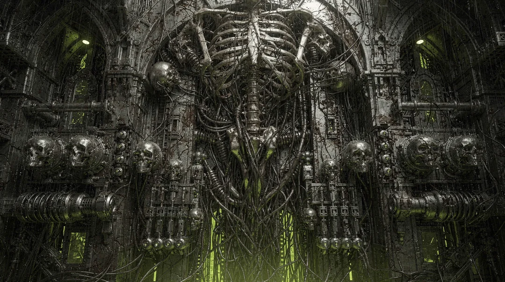
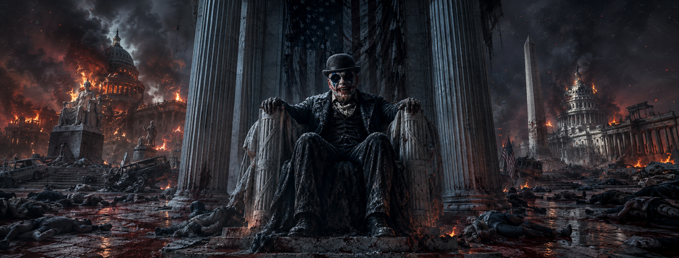
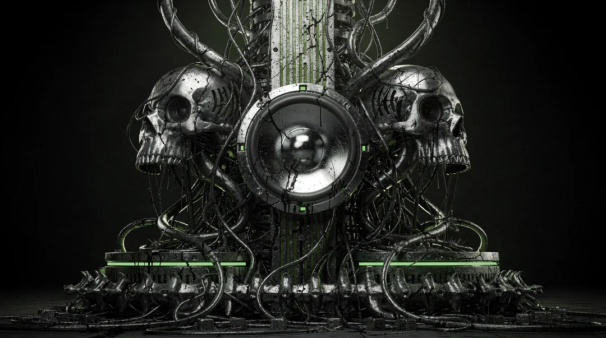
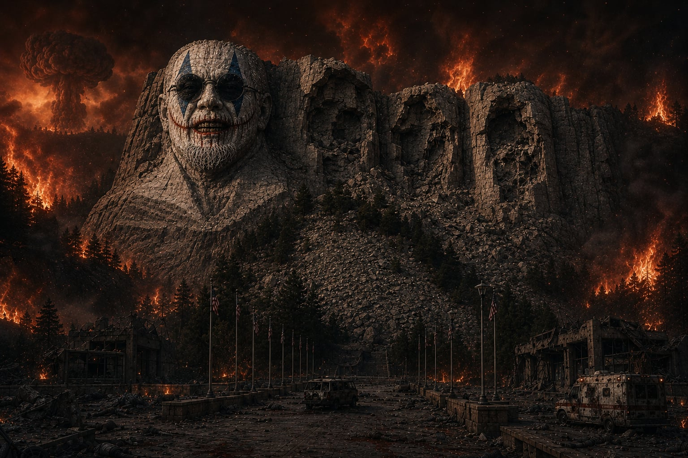
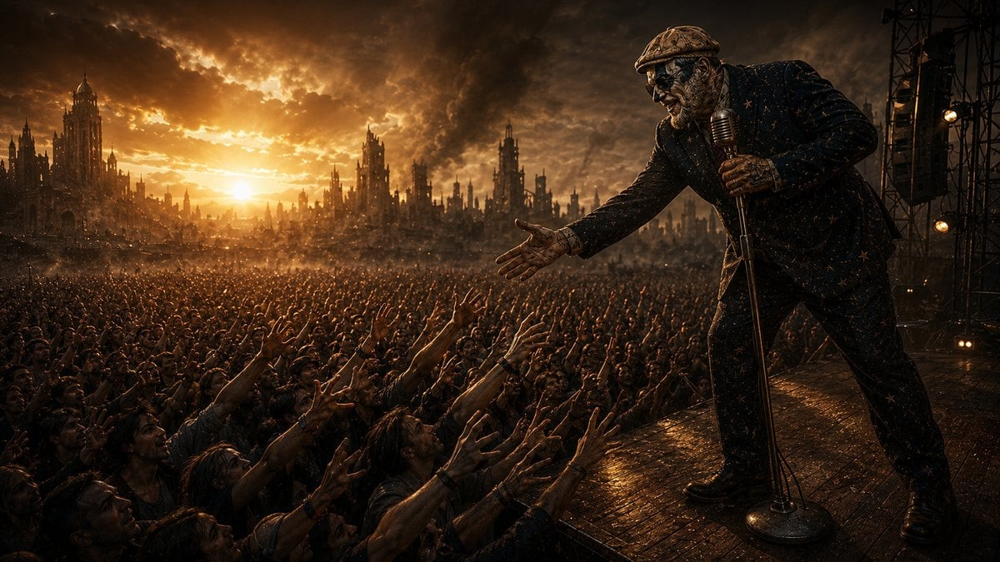
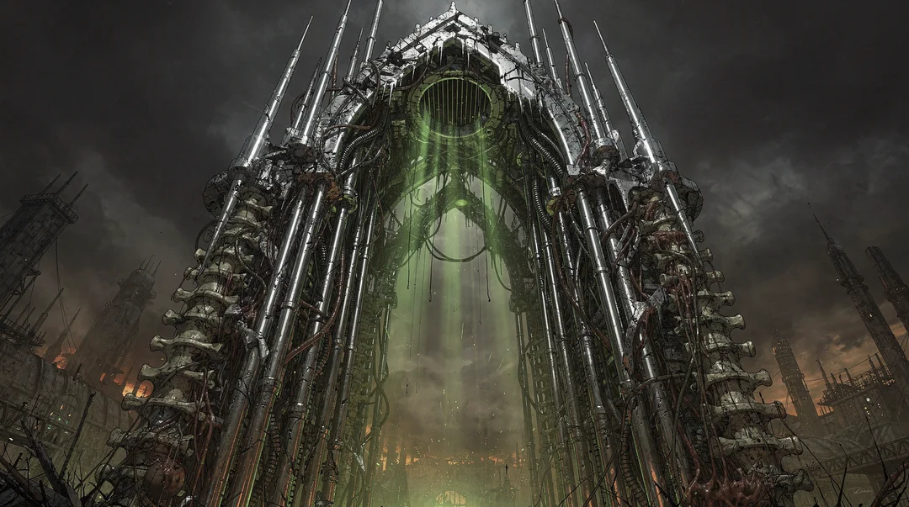

Apocalyptic Americana — a signal that will not stay buried

They told us duck and cover
said the desk would see us through
I built a house of homework
and it didn’t, and neither did you
So sound the siren, ring the bell
practice smiling, practice well
we’re still here and still transmitting
something’s wrong but we’re still fitting


Nukie Carpathio didn’t survive the fallout so much as refuse to stop. Pulled from a collapsed shelter with a busted guitar fused to his ribs, he came back wired wrong — equal parts campaign clown, cabaret ghost, and something the containment reports never fully explain.
Backed by The Warheads, the live show reads like a civil defense drill that grew a heartbeat — sirens, static, wet metal, and three-part harmony that keeps finding a pulse where there shouldn’t be one.
A duet between a wanted poster and something that shouldn’t breathe. Deeply unwell. Couldn’t stop listening.
Somewhere between a containment breach and a seance. The bunker never sounded this alive.
Vote for oblivion? At this point, sure. The thing has a pulse and a chorus. Neither should exist.

Tour coordinates, signal updates, and things best not explained — straight to your inbox.